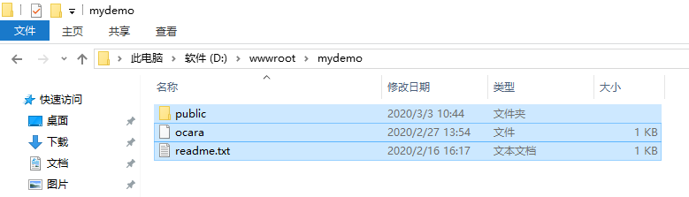
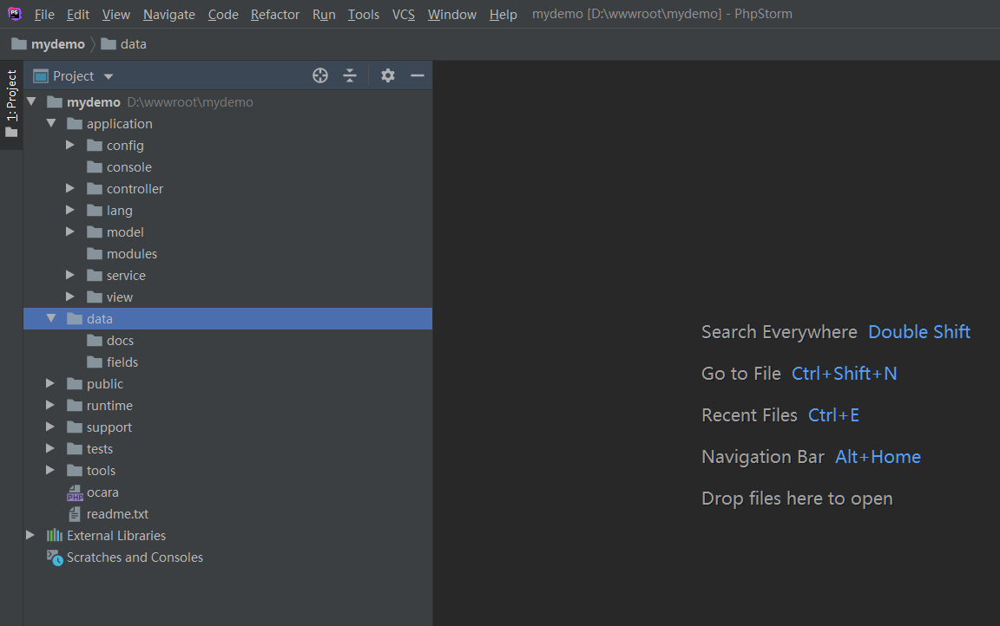

8.1.1 新建应用
1、确定网站项目目录 项目目录不是网站根目录，而是它的上级目录，因为网站根目录是项目目录下面的public目录。 比如项目目录是D:\wwwroot\mydemo目录，则其下的public目录要设置为网站根目录。 2、复制项目 复制Ocara框架目录下面的demo/myapp的所有目录和文件到项目目录D:\wwwroot\mydemo。  2、指定框架目录 可以在public/index.php中修改框架目录。 如果是composer安装的，则指定autoload.php路径即可。 本实例中，假设框架在D:/wwwroot/ocara，因为和项目目录是同级目录，所以可以使用相对路径。use Ocara\Core\Ocara; //程序执行开始时间 define('OC_EXECUTE_START_TIME', microtime(true)); /** * 加载框架 * 请修改和确定以下路径 */ require_once dirname(dirname(__DIR__)) . '/ocara/system/library/Core/Ocara.php'; //require_once dirname(dirname(__DIR__)) . '/vendor/autoload.php'; /** * 运行应用 */ Ocara::create();4、运行生成应用 运行主文件index.php，框架会自动在当前目录下面新建基本的应用目录和文件。 假设，当前本地域名是localhost。所以请运行：http://localhost/index.php。 此时，页面中显示“Application create Success!”表示生成成功！ 生成目录后，目录结构如下图：  5、添加控制器动作 框架生成项目时没有生成默认的控制器动作home/index。 这里生成一下作为实例。 （1）进入开发者中心 http://localhost/pass/tools/可打开开发者中心。输入用户名和密码，都是root。 （2）生成控制器和动作